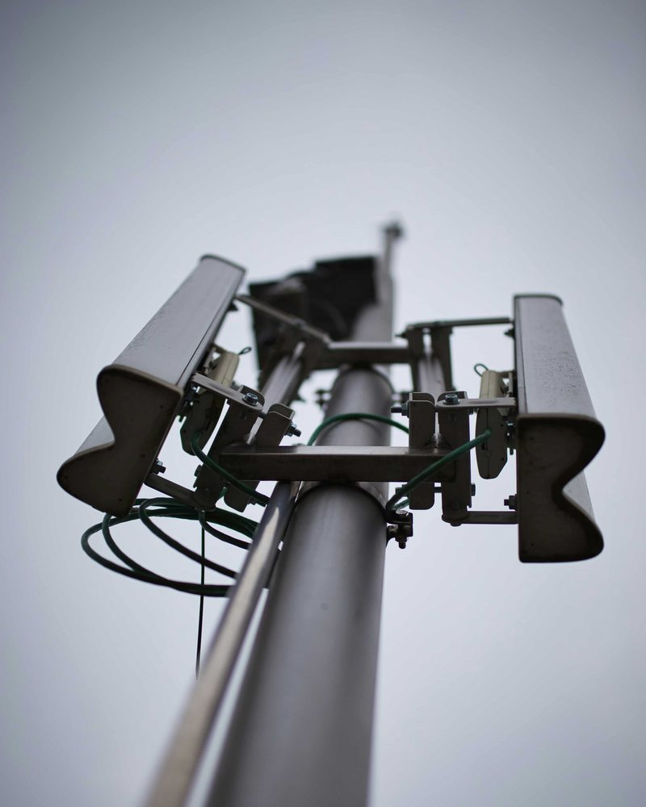

A.01 / Compute
T.Core
An omnichannel software spine that links all our products and services together.
Request a briefingModular Modern Warfare
Modular, AI-driven border defense and counter-UAV systems for nations that build at the edge of what hardware allows.
Mission
Systems
Each system works on its own and gets stronger when connected. T.Core links them all.
A.01 / Compute
An omnichannel software spine that links all our products and services together.
Request a briefing
A.02 / Sensors
Modular sensing units capable of detecting incoming threats before they hit perimeter bounds.
Request a briefingA.03 / Data & comms
A closed-channel sync for analysis, communications and recon planning.
Request a briefingDomains
One modular stack, built to defend every edge a nation has to hold.
Questions
Straight answers about what we build and how to get started.
Traversion Dynamics is a deep-tech AI startup that builds modular border defense and counter-UAV systems. Our systems help nations see incoming threats early and protect land, air and water.
They are our four systems. T.Core is an omnichannel software spine that links all our products and services. T.Sense is a set of modular sensing units that detect incoming threats before they hit perimeter bounds. T.Sync is a closed-channel sync for analysis, communications and recon planning. T.Pulse is a suite of services for recon actions.
We detect, track and respond to hostile drones. Sensing, compute and response work as one chain, so the time between first detection and action stays short.
Yes. Modular sensing units provide persistent awareness along a border line, and the same stack extends over water to coastal and maritime approaches.
Open the contact page, choose a topic and write a short message. It goes straight to our team, and a specialist replies to the address you provide.
Next step